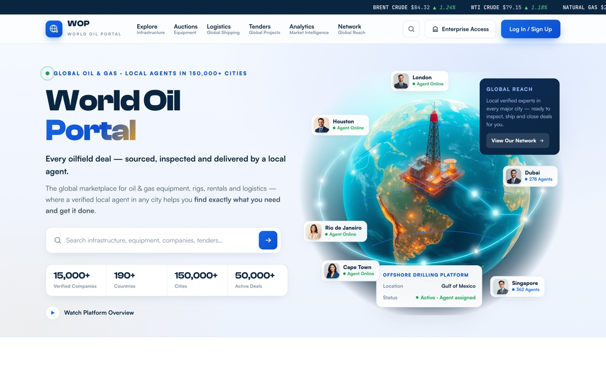

Cinematic Globe
Mood: a living planet of energy — rich, photoreal, confident.
Idea. A photorealistic Earth with a real offshore platform at its core, glowing logistics arcs and real agent faces pinned to their cities. From the first second it says: oil & gas, worldwide, with a human agent everywhere.
How to develop. The globe becomes the signature across the platform — interactive on the homepage, mini-globes in company profiles and the agent network. Best for wow-factor and investor-facing impact.
Palette
Type
Clash Display · Satoshi · JetBrains Mono
Motion
Floating agent pins, animated arcs, live counters, market ticker.